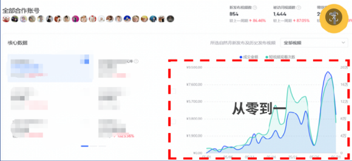
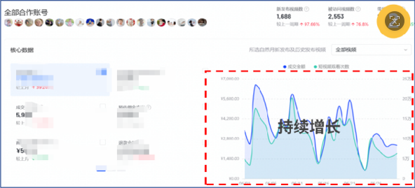
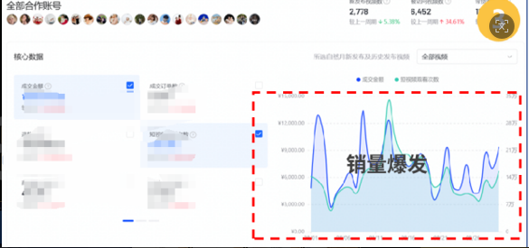
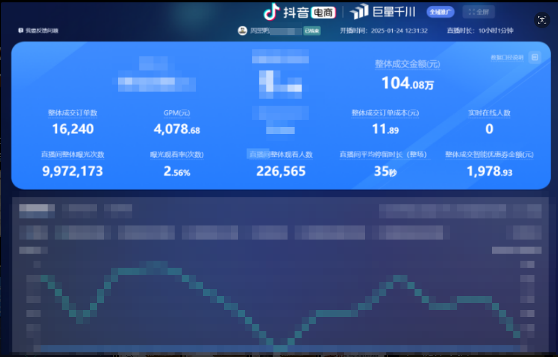
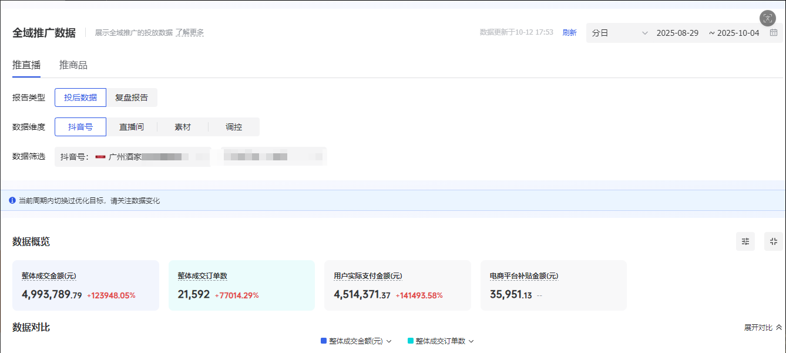
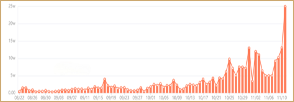
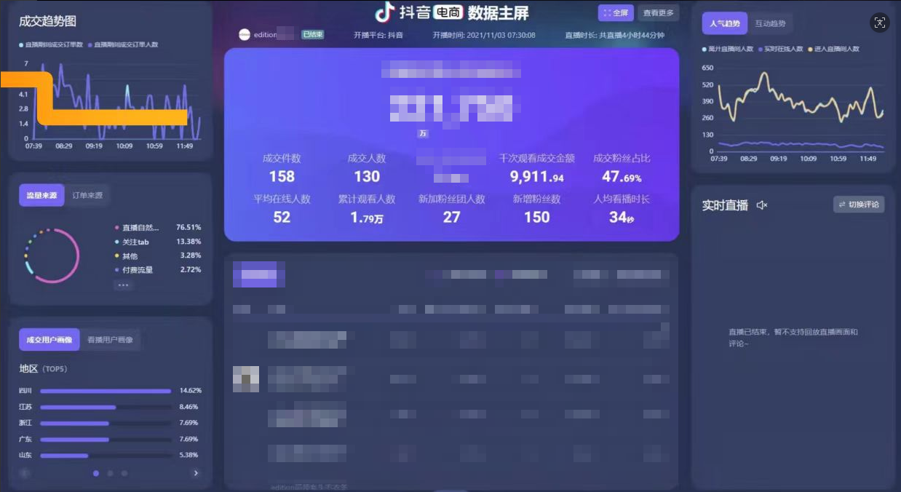

KOC Methodology
KOC 素材一鱼多吃
达人种草进入直播间，授权后混剪延长素材生命周期，配合千川投放让素材成本更低、转化效率更高。
Business Cases
全链路内容闭环运营，承接多品类全域推流，精准赋能打造爆款内容与流量IP
用真实数据和项目方法论展示投放、内容与直播间增长能力。
Operation Methods
KOC Methodology
达人种草进入直播间，授权后混剪延长素材生命周期，配合千川投放让素材成本更低、转化效率更高。
Operation Path
按「冷启动从零到一→持续增长→销量爆发」推进，覆盖测品到起势全周期。



食品案例
围绕年货节核心策略，以三阶段全链路运营和爆款内容精准投放，爆款内容+精准投放：打造单条原创大爆款视频长期跑量 聚焦直播间短视频引流、千川短视频投放双渠道 。

食品案例
抓住中秋节点，以大量 KOC 素材撬动生意转化，抓住月饼应季窗口期，以优质短视频强势抢量， 挤压自然流量（搜索/推荐）占比，撬动直播间成交增量。

个护案例
以直播间为核心，构建从种草、新客开发到人群资产沉淀的闭环循环系统，提升短期爆发力和长期增长。

服饰案例
围绕服饰类目与时尚调性策划直播内容，强化主播专业表达和产品价值传递，拉升在线人数、销售额与投放效率。

电器案例
基于添可洗地机的目标受众，深度分析了达人的粉丝画像，制定了详细的直播脚本，精确分配各环节时间，并由专业运营团队实时监控观众反馈，根据互动情况灵活调整节奏，确保直播流畅高效。

从策略到执行，让每一次投放和内容生产都服务于成交。